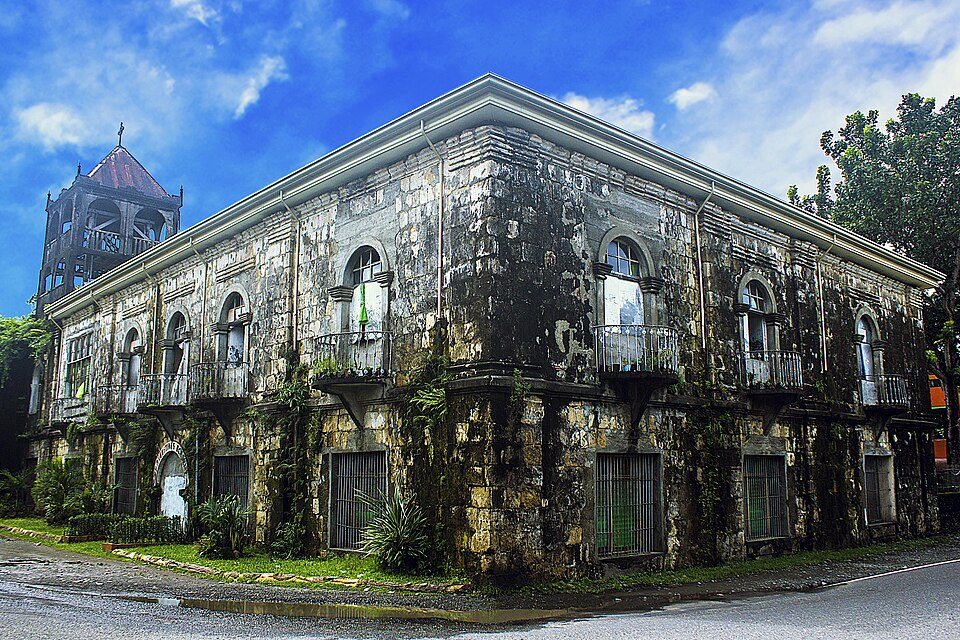

San Juan Nepomuceno Parish Church
A well-preserved Spanish colonial church in Anini-y

Patnongon Church Ruins
Historic ruins built by Augustinian friars

Hamtic Cemetery Church
A unique church located within a cemetery
Discover Antique’s historic churches and sacred sites
Antique is home to several historic religious landmarks that reflect its rich spiritual and colonial heritage. These sites have stood for centuries and continue to serve as places of worship and cultural importance.
Built using traditional materials such as coral stones and lime, these structures showcase the architectural influence of the Spanish colonial period.
Today, they remain significant not only for their religious value but also for their historical and cultural relevance.
Explore the province’s historic churches
A well-preserved Spanish colonial church in Anini-y

Historic ruins built by Augustinian friars
A unique church located within a cemetery